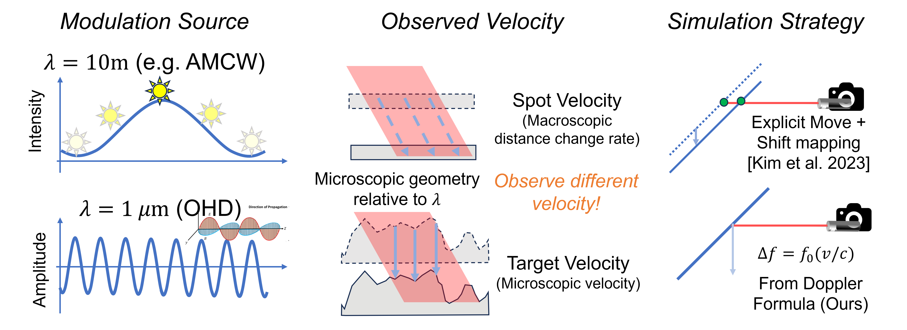

(3) Comparison with AMCW Doppler

We found that there is an underlying difference in the physics between the Doppler effect in AMCW and OHD, which results in different measurement and simulation strategies. The main reason for this difference is the large disparity in wavelength. AMCW has a much longer wavelength compared to the microgeometry; it observes the rough plane as a smooth plane and thus measures the macroscopic rate of distance change, known as spot velocity. However, for OHD, since the microgeometry has large deviations compared to the wavelength, all microscopic perturbations remain independent and we can detect the actual microscopic velocity, which is called target velocity.